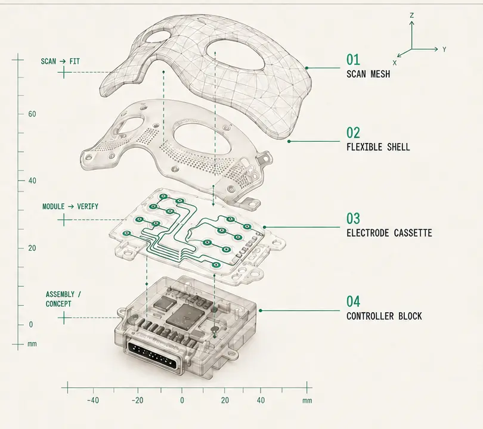
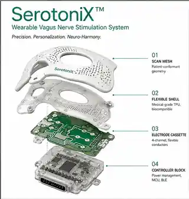
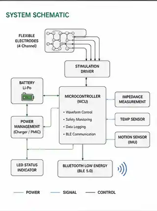
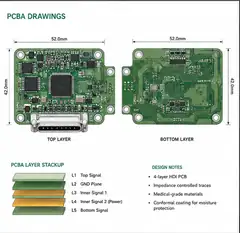
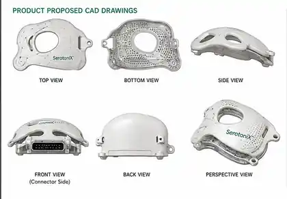
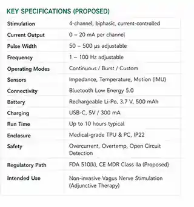
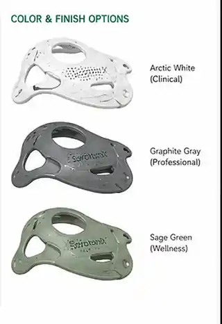

Consumer wellbeing programme
A short, guided facial reset for modern working life.
SerotoniX™ is being developed for moments between meetings, after screen-heavy work or at the end of a demanding day. The initial product direction combines a personalised facial interface with guided activation and relaxation routines. It is not intended to diagnose, treat, cure or prevent disease.

Product development record
Proposed product and engineering concepts.
These visuals document an early productisation direction—from personalised facial geometry and flexible electronics to controller architecture, industrial design and finish exploration.
The drawings are exploratory, not released product documentation. Text embedded in the images—including vagus-nerve stimulation, intended use, medical-grade materials, FDA 510(k), CE MDR, output ranges, battery life and colour-market labels—does not represent current WinVerse™ claims, final specifications, regulatory status or market authorisation.

Exploded wearable concept
An illustrative layered architecture combining a personalised scan-derived mesh, flexible facial shell, electrode cassette and compact controller block.

System control schematic
A preliminary functional map of stimulation control, battery and power management, impedance and temperature sensing, motion sensing, logging and BLE connectivity.

Controller PCBA study
An early board-layout study showing top and bottom routing, connector placement and a proposed multilayer stack. It is not a manufacturing-ready PCB design.

Proposed CAD views
Top, bottom, side, front, back and perspective views exploring enclosure geometry, openings, mounting points and packaging relationships.

Preliminary design envelope
A working specification sheet used to frame engineering questions. Every value, feature and regulatory reference remains provisional and subject to verification.

Colour and finish exploration
Three visual directions—white, graphite and sage—used to explore how the product might move from laboratory language toward a more approachable consumer-wellbeing identity.
Select any image to view the full-resolution concept artwork. Final architecture, safety controls, materials, performance, claims and classification will be determined through engineering, human-factors, safety and jurisdiction-specific review.